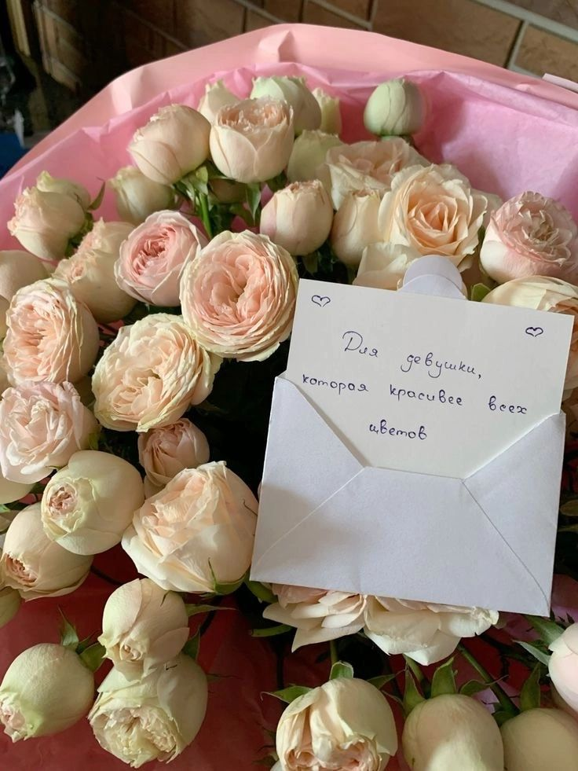

FloraAI анализирует повод и предпочтения получателя, чтобы создать уникальный цветочный букет с романтичным описанием. Просто укажите детали — наш искусственный интеллект сделает всё остальное.

Наш ИИ анализирует тысячи комбинаций цветов, чтобы подобрать идеальный букет для любого повода и получателя.
Учитываем все детали: повод, характер получателя, предпочтения в цветах и даже бюджет.
Каждый букет сопровождается уникальным поэтичным описанием, которое тронет сердце получателя.
День рождения, годовщина, свадьба, извинение, признание в любви, просто так.
Возраст, характер (романтичный, практичный, сентиментальный), любимые цвета.
Тип цветов (розы, тюльпаны, орхидеи), цветовая гамма, размер букета, бюджет.
Ваши отношения с получателем, важные детали, которые стоит учесть.